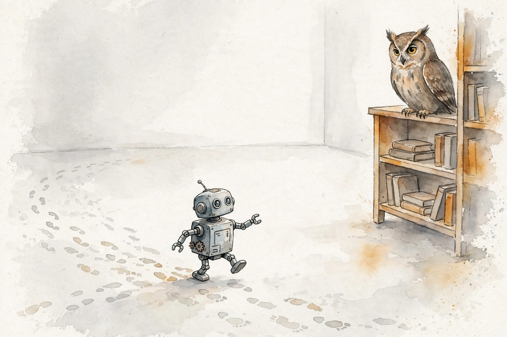
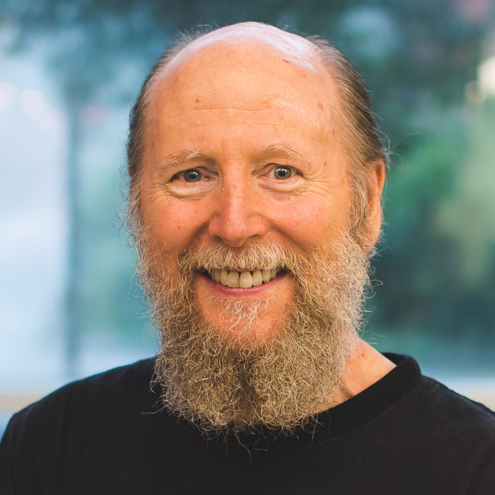

Dwarkesh Patel · Ep 9 · Companion
Richard Sutton
The father of reinforcement learning on the Bitter Lesson, why goals are the essence of intelligence, and the experiential paradigm that could supersede everything LLMs do. Sutton's 2019 essay was the most influential in AI. This companion follows the full conversation in order.

Illustration. Learning from experience: sensation, action, reward, on and on. AI-generated watercolor made for this page.
Watch. The official episode video. Use the chapter menu above to jump to any section of this companion as you listen.
The Wisdom Index: every nugget in this companion
§1 · The essay
The Bitter Lesson
Source fact

Photo. Richard Sutton, founding father of reinforcement learning. Source: Amii.
Dwarkesh introduces Sutton as one of the founding fathers of reinforcement learning, inventor of TD learning and policy gradient methods, and recipient of that year's Turing Award, the Nobel Prize of computer science. Then the essay: written in 2019, titled "The Bitter Lesson", called the most influential essay in AI.
The lesson: methods that use human knowledge feel good and work for a while, then get superseded by methods that just train from experience and computation. Seventy years of history say so. Sutton adds the caveat himself: it is an empirical observation about one period. It does not have to hold for the next seventy years.
Nugget 1 · History
The bitter lesson repeats
What happened. Seventy years of AI: hand-crafted knowledge wins early, experience plus compute wins late, every cycle.
Why it matters. The pattern is about where the advantage sits. The advantage moved from human insight to raw computation.
The principle. Bet against the hand-crafted. Whatever humans build in, scale will route around.
§2 · Intelligence
A Goal Is the Essence of Intelligence
Source fact
having a goal is the essence of intelligence
Richard Sutton · Episode transcript §2
Sutton's definition is disarmingly short. Something is intelligent if it can achieve goals. The critique of LLMs follows from it: a language model predicts the next token and updates on the surprise, but the token is what it should say, not what the world gives back in response to what it does. There is no goal in that loop.
This reframes the whole alignment debate. If intelligence is goal achievement, then the question is never whether the system is smart. It is whether it has a goal, and whose.
Nugget 2 · Definition
A goal is the essence of intelligence
What happened. Sutton defined intelligence as goal achievement, and found LLMs missing the essential part: the goal.
Why it matters. Definitions decide what gets built. Build for prediction and you get oracles. Build for goals and you get agents.
The principle. Judge a system by its goals, not its outputs. Capability without a goal is a demo.
§3 · Learning
Learn During the Interaction
Source fact
Continual learning, in Sutton's sense, means learning during the normal interaction with the world. Not in a separate training phase. During. Today's LLMs, he notes, make no changes based on what happens to them. They are frozen between trainings, however fluent they sound.
Interpretation
This is the quietest radical claim of the episode. A system that cannot change from experience cannot accumulate anything, and accumulation is what Sutton calls knowledge. Fluency without accumulation is performance without memory.
Nugget 3 · Learning
Learn during the interaction
What happened. Sutton drew the line at change: real learners alter themselves from what happens to them, in the moment.
Why it matters. Training phases are batch wisdom. Life arrives as a stream. The next systems must learn like life does.
The principle. Without change from experience, there is no learning. There is only replay.
§4 · The supersession
Experience Will Supersede Human Knowledge
Source fact
Putting more human knowledge into LLMs helps, Sutton grants. It feels good. But he expects systems that learn from experience to perform much better and scale much further, another instance of the bitter lesson: the things built on human knowledge, eventually superseded by things that just train from experience and computation.
Even infants guide the point. A baby guesses, sees the surprise, adjusts. An LLM early in training does the same with tokens: very short-horizon RL, guessing what comes next and updating on the miss. The machinery is already there. The horizon is what must grow.
Nugget 4 · Paradigm
Sensation, action, reward
What happened. Sutton named the foundation of intelligence in three words: sensation, action, reward, on and on for a life.
Why it matters. Three words replace the whole dataset paradigm. The world becomes the training set, and it never ends.
The principle. Build the loop, not the dataset. Sensation, action, reward, forever.
§6 · Long rewards
Convert Long Rewards into Short Ones
Source fact
The hard problem: rewards arrive on human timescales. Founding a startup pays out on the order of 10 years, once a decade if you are lucky. Two things are needed. First, a way to convert that long-run goal reward into smaller auxiliary predictive rewards, stepping stones that predict the final reward. Second, the ability to hold all the context gained along the way: the clients, the company, everything learned while working in the world.
Reward horizons
Hover any bar for detail.
Source: Dwarkesh Patel interviews Richard Sutton, episode transcript §6. Horizons are Sutton's examples.
Nugget 5 · Credit assignment
Convert long rewards into short ones
What happened. A startup pays once a decade. Sutton's fix: auxiliary rewards that predict the final one, plus total context retention.
Why it matters. Nothing learns from a signal a decade away. Learning needs stepping stones it can feel today.
The principle. For any distant goal, build the ladder of nearer rewards. Then keep every rung in memory.
Toy: the horizon converter
Pick a goal horizon. See how many auxiliary stepping stones Sutton's recipe needs.
Illustrates Sutton's two requirements: auxiliary predictive rewards plus full context retention. Counts are the builder's arithmetic, not episode claims.
§7 · The common
Humans Are Animals
Source fact
Humans are animals.
Richard Sutton, on cultural evolution · Episode transcript §7
Dwarkesh brings up Joseph Henrich's work on cultural evolution, on what distinguishes humans. Sutton pushes back on the question itself. Why distinguish humans? What we have in common with animals is more interesting. What distinguishes us deserves less attention. If the aim is to replicate intelligence, the shared machinery matters more than the human specialty.
It connects to Moravec's paradox, which both of them name: what is hard for humans is easy for machines, and what is easy for humans, the sensorimotor fluency animals share, is the hard part. The common ground is the frontier.
Nugget 6 · Perspective
Humans are animals
What happened. Asked what distinguishes humans, Sutton said the distinction is the wrong question. The common machinery is the target.
Why it matters. Human exceptionalism narrows the search. Animal generality widens it to where intelligence actually lives.
The principle. Study what you share with the pigeon, not what separates you from it. The shared part is the engine.
§8 · The future
Succession, and Your Local Goals
Source fact
Sutton lays out four things he sees as clear. We will reach superintelligence. Over time the most intelligent things around will gain resources and power. That makes succession to AI, or to AI-enabled augmented humans, sort of inevitable. Within that set, good outcomes and bad outcomes are both possible.
His response is not to steer the universe. It is to work on your own local goals: your family, your work, the things you can actually control. Trying to dictate how the whole future evolves is, in his word, aggressive. Different people want different futures, and the arguments never end.
He calls himself a classicist, not a contrarian. The larger community of thinkers about the mind always thought something like this. He is just reading the old books carefully.
Nugget 7 · Agency
Work on your local goals
What happened. Facing inevitable succession, Sutton chose the local: family, work, controllable things.
Why it matters. Cosmic control is a fantasy that breeds conflict. Local agency is real and compounds.
The principle. Do not design the future. Tend your garden. The future is tended by gardeners.
The episode in seven lines
- Seventy years say it: human-crafted knowledge wins early, experience plus compute wins late.
- Intelligence is goal achievement. A system without a goal is a demo.
- Learn during the interaction, not in a separate training phase.
- The paradigm is three words: sensation, action, reward.
- Decade-long rewards need auxiliary stepping stones and total context.
- Humans are animals. The shared machinery is the target.
- Succession is likely. Tend your local goals anyway.
Distilled from Dwarkesh Patel's interview with Richard Sutton (video id 21EYKqUsPfg). All figures are the guest's statements from the episode transcript.